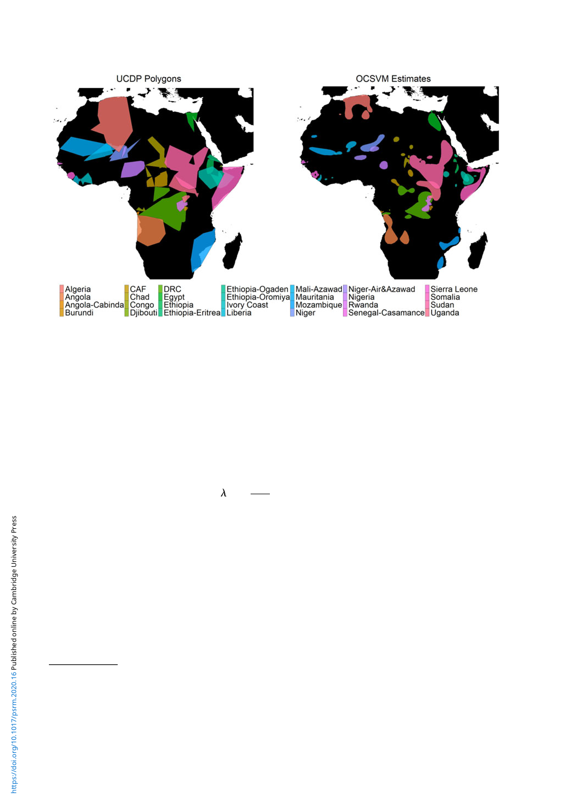

Political Science Research and Methods 111
Figure 7. Time-invariant estimates of conflict zones in Africa.
Note: The figure maps the time-invariant estimates of conflict zones. The left and right panes are the updated UCDP Polygons dataset and
the OCSVM estimates respectively. The conflict names are shown at the bottom with corresponding colors. For graphical purposes, the
conflict zones are limited to those of state-based conflicts in Africa. For readers of monotone prints, please refer to the online article.
highlight an issue that is understudied in political science.32 The article, which was published on
18 January 2018, has already been cited by 52 newspapers, including the New York Times and the
Economist (8 August 2018).33 Their sample is cross-sectional and comprised of 172 park-species
combinations in Africa.34
The outcome variable is the annualized finite rate of population change,
l=
dt=1
dt=0
1/(yt=1 −yt=0 )
,
where dt=0 and dt=1 are the densities of a wild large herbivores in the beginning and end years of
mammal population records (yt=0 and yt=1 respectively). The lambda measures the ratio of the
population size at the end of a year and the population size at the beginning of the year. The value
λ = 0.9, for instance, indicates that if there are 100 animals at a beginning of a year, their popu-
lation decreases to 90 at the end of that year. The densities of wild large herbivores are compiled
by “systematically reviewing academic and grey literature” (Daskin and Pringle, 2018: 329).35
Their key predictor is the proportion of conflict zones averaged over the years of mammal popu-
lation records. While the authors use the UCDP Polygons dataset, I use the new conflict zone
dataset and calculate a proportion of zones within each protected area. In the following section,
I compare the results with the updated version of the UCDP Polygons and the results with the
32Nature letters are “short reports of original research focused on an outstanding finding whose importance means that it
will be of interest to scientists in other fields” (https://www.nature.com/nature/for-authors/formatting-guide; 19 October 2018).
To my best knowledge, this paper is the first response to Daskin and Pringle (2018) in political science. I also conduct two
additional replications. See the last paragraph in the next subsection.
33See the author’s website (https://joshdaskinecology.com/publications; accessed on 8 August 2018) for the latest
information.
34The sample includes 96 protected areas and 30 species.
35See Daskin and Pringle (2018) for the details.